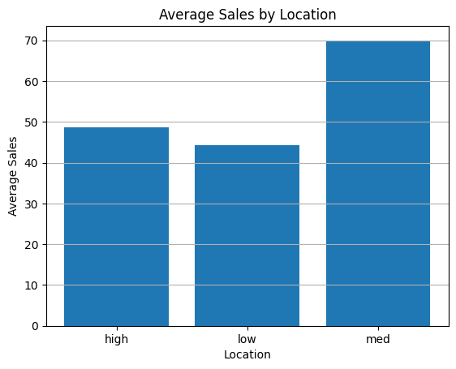

8.0 מאיפה באנו ולאן אנחנו הולכים
פרק חדש בקורס! יחידה 7 סגרה את נושא הרגרסיות ("סוף נושא רגרסיות" 🎓), ועכשיו אנחנו פותחים את השליש האחרון: ANOVA — Analysis of Variance, ניתוח שונות. ואם יש לך תחושת דז'ה-וו — בצדק. עוד ביחידה 1 הבטחנו לך שני דברים: שהתפלגות F ("יחס בין שתי שונויות") תקבל תפקיד ראשי, ושהשם Mean Square יחזור. היחידה הזאת היא בדיוק קיום ההבטחה.
גם הכלים מוכרים: ביחידה 3 השווינו תוחלות של שתי קבוצות עם מבחן t. עכשיו נשאל את השאלה הטבעית הבאה — מה עושים כשיש שלוש קבוצות או יותר? נבנה את המבחן מאפס: השערות ← פירוק השונות ← דרגות חופש ← טבלת ANOVA ← מבחן F. שלוש שאלות מבחן (14, 15, 16) גרות כאן, ושתי מעבדות אינטראקטיביות 🎛️ מחכות בפנים.
ביחידה הזאת אנחנו בונים את המבחן עצמו; ביחידה 9 נלמד מה עושים אחריו (Tukey) ומה עושים כשההנחות שלו נשברות (Levene, Shapiro-Wilk, Welch, Kruskal-Wallis) — שם גם נפתח לעומק את טבלאות דף העזר שלך.
8.1 השאלה: שלוש קבוצות, ממוצעים שונים — אמיתי או רעש?
הדוגמה שמלווה את כל ההרצאה: משווים ציוני תלמידים בשלוש שיטות הוראה — פרונטלי, היברידי ומקוון (זום), 30 תלמידים בכל קבוצה (N=90). מחשבים ממוצעים ומקבלים: פרונטלי ≈ 69.4, היברידי ≈ 74.9, מקוון ≈ 82.2. המקוון "מנצח". סגרנו עניין?

ההשערות — שאלה 14
מלכודת 2: 📓 תוכן מקובץ סיכום לא לערבב בין "H1 מתקיימת" לבין "נדחה את H0": זה שתוחלת אחת שונה באוכלוסייה מספיק כדי ש-H1 תהיה נכונה — אבל האם נזהה את זה ונדחה את H0 בפועל תלוי בנתונים, בגודל ההבדל וברעש. הבחנה שכבר פגשת ביחידה 3 (עוצמת מבחן!).
המודל: כל ציון מורכב משלושה חלקים
ומה מניחים על הרעש? \(\varepsilon_{ij}\sim N(0,\sigma^2)\) — פענוח: תוחלת 0 (הרעש לא מטה שיטתית לאף כיוון) ושונות \(\sigma^2\), כאשר אותה \(\sigma^2\) אחת משותפת לכל הקבוצות. את רשימת הנחות המודל המלאה נפגוש ב-8.7, אבל את \(\sigma^2\) — "שונות הרעש" — כדאי להכיר כבר עכשיו, כי היא תככב ב-8.5.
🔎 בונוס: ANOVA היא בעצם… רגרסיה! (החיבור ליחידות 4–6)
תסתכל שוב על המודל: קבוע + אפקט לפי קטגוריה + שגיאה. זה מזכיר משהו? זו בדיוק רגרסיה עם משתני דמה מיחידה 5! אם נקודד את שיטת ההוראה כשני משתני דמה (בדיוק כמו מהנדס/איש שיווק), נקבל רגרסיה שהחותך שלה הוא ממוצע קבוצת הבסיס וכל מקדם הוא הפרש ממוצעים. ובאמת — בהמשך תראה שבפייתון מריצים ANOVA עם smf.ols, אותה פונקציה בדיוק מהרגרסיות. גם מבחן ה-F הכולל שראית חבוי בפלט ה-summary עוד מיחידה 4 ("F-statistic") — הוא הוא מבחן ה-ANOVA. ומתנה קטנה לעתיד: ה-R² של הרגרסיה הזאת שווה בדיוק ל-SSB/SST שנפגוש עוד רגע.
8.2 הרעיון הגדול: פירוק השונות — SST = SSB + SSW
איך מכמתים "ההבדל בין הקבוצות גדול ממה שהרעש מסביר"? הרעיון הגאוני של פישר: לוקחים את כל הפיזור בנתונים ומפרקים אותו לשני חלקים — החלק שנובע מהבדלים בין הקבוצות (האות 📣) והחלק שנובע מפיזור בתוך הקבוצות (הרעש 📻). 📓 תוכן מקובץ סיכום כפי שהודגש בכיתה: כל מהות המבחן היא השוואה בין שתי שונויות — בין הקבוצות מול בתוך הקבוצות.
SST (Total) — כמה כל תצפית רחוקה מהממוצע הכללי: כל הפיזור שיש בעולם. SSB (Between) — כמה ממוצעי הקבוצות רחוקים מהממוצע הכללי, כשכל קבוצה "שוקלת" לפי גודלה \(n_i\): האות. SSW (Within) — כמה כל תצפית רחוקה מהממוצע של הקבוצה שלה: הרעש. והפלא: האות והרעש מסתכמים בדיוק לפיזור הכולל.
ממוצעי הקבוצות: \(\bar{y}_{A.}=5,\; \bar{y}_{B.}=8,\; \bar{y}_{C.}=11\); הממוצע הכללי: \(\bar{y}_{..}=8\).
SSB = 3·(5−8)² + 3·(8−8)² + 3·(11−8)² = 27 + 0 + 27 = 54
SSW = [(4−5)²+(5−5)²+(6−5)²] + [(7−8)²+(8−8)²+(9−8)²] + [(10−11)²+(11−11)²+(12−11)²] = 2+2+2 = 6
SST = (4−8)²+(5−8)²+⋯+(12−8)² = 16+9+4+1+0+1+4+9+16 = 60. ובדיקה: 54 + 6 = 60 ✓
שים לב מה המספרים מספרים: כמעט כל הפיזור (54 מתוך 60 = 90%) מגיע מההבדלים בין הקבוצות — אות חזק, רעש חלש.
8.3 מעבדת אות ורעש 🎛️ — לראות את הפירוק חי
לפני שנמשיך לנוסחאות — בוא תרגיש את זה. במעבדה למטה שלוש קבוצות (ניחשת נכון — פרונטלי, היברידי, מקוון). אתה שולט בשלושה דברים: כמה הממוצעים האמיתיים רחוקים זה מזה (האות), כמה רעש יש בתוך כל קבוצה, וכמה תצפיות בכל קבוצה. הקווים הצבעוניים = ממוצעי הקבוצות; המקווקו השחור = הממוצע הכללי; תיבת "הצג את הסטיות" (כבר מסומנת) מציירת את שני מרכיבי הפירוק: כחול עבה = המרחקים שבונים את SSB, כתום דק = המרחקים שבונים את SSW.
הצצה קדימה: בשורה התחתונה של המעבדה מופיע מספר בשם F. נגדיר אותו כמו שצריך רק ב-8.5 — בינתיים קרא אותו כך: "פי כמה האות גדול מהרעש" (אחרי נרמול קטן שנלמד), כאשר MSB = האות המנורמל ו-MSW = הרעש המנורמל. ו"דוחים את H0" = ה-F חצה את הערך הקריטי שלו.
8.4 דרגות חופש: מידע פחות אילוצים — שאלה 16
לפני שנרכיב את המבחן, חייבים לעצור על המושג שהקורס הזה אוהב לשאול עליו: דרגות חופש (df). ההגדרה שניתנה בכיתה שווה חריטה:
ומה ב-ANOVA? אותו רעיון, פעמיים
| רכיב | המידע | האילוץ | df |
|---|---|---|---|
| בתוך הקבוצות (SSW) | N תצפיות | בכל קבוצה סכום הסטיות מהממוצע שלה = 0 — אילוץ אחד לכל קבוצה ⇐ k אילוצים | N − k |
| בין הקבוצות (SSB) | k ממוצעי קבוצות | הממוצע המשוקלל של ממוצעי הקבוצות חייב לצאת הממוצע הכללי — אילוץ אחד | k − 1 |
| סה"כ (SST) | N תצפיות | סכום הסטיות מהממוצע הכללי = 0 — אילוץ אחד | N − 1 |
8.5 מ-SS ל-MS ל-F: המבחן עצמו — שאלה 15
יש לנו אות (SSB) ורעש (SSW) — אבל אי אפשר להשוות אותם ישירות! למה? כי הם בנויים מכמויות שונות של מידע. וכאן חוזרת ההבטחה מיחידה 1: מחלקים כל SS בדרגות החופש שלו ומקבלים Mean Square — ריבוע ממוצע, שהוא בעצם "שונות ליחידת מידע":
ובאיזו התפלגות משווים את ה-F שקיבלנו? 📓 תוכן מקובץ סיכום בסיכום מהכיתה כתוב רק "הסטטיסטי מתפלג F" — נשלים את מה שחסר שם, כי זה בדיוק מה שהמבחן אוהב לשאול: אילו פרמטרים?
🔎 בונוס: השרשרת המלאה מיחידה 1 — איך נולדת התפלגות F של המבחן
זוכר את שרשרת ההתפלגויות? נורמלית ← חי-בריבוע ← F. הנה היא בפעולה, חוליה-חוליה:
1) לפי הנחות המודל, השגיאות נורמליות: \(\varepsilon_{ij}\sim N(0,\sigma^2)\), ולכן \(\varepsilon_{ij}/\sigma \sim N(0,1)\) — אלה ה-Z-ים שלנו.
2) מיחידה 1: סכום של m ריבועי Z בלתי-תלויים מתפלג \(\chi^2_m\). ואכן: \(SS_W/\sigma^2 \sim \chi^2_{N-k}\) (תמיד!), ותחת H0 גם \(SS_B/\sigma^2 \sim \chi^2_{k-1}\). שים לב — דרגות החופש של החי-בריבוע הן בדיוק ה-df שספרנו ב-8.4. זו לא מקריות, זו הסיבה האמיתית לספירה.
3) SSB ו-SSW בלתי-תלויים (עובדה לא טריוויאלית — משפט קוכרן, למי שירצה לחפש), ומיחידה 1: יחס של שני חי-בריבוע, כל אחד מחולק ב-df שלו, מתפלג F. הצב: \(\dfrac{(SS_B/\sigma^2)/(k-1)}{(SS_W/\sigma^2)/(N-k)} = \dfrac{MS_B}{MS_W} \sim F(k-1,N-k)\).
ושים לב ליופי: ה-\(\sigma^2\) הלא-ידוע מצטמצם ביחס — ולכן אפשר לחשב את F מהנתונים בלי לדעת את שונות הרעש האמיתית. וגם הפאנץ' לקראת יחידה 9: כל השרשרת נשענת על החוליה הראשונה — הנורמליות. בלעדיה הסכומים אינם חי-בריבוע, היחס אינו F, וה-p-value פשוט לא נכון. לכן בודקים הנחות.
8.6 טבלת ANOVA: לקרוא, לבנות — ולהשלים
את כל מה שבנינו אורזים בטבלה סטנדרטית אחת — זו שכל תוכנה סטטיסטית מדפיסה וזו שתקבל במבחן. הנה הטבלה האמיתית מדוגמת שיטות ההוראה של ההרצאה (k=3, N=90):
| מקור השונות | SS | df | MS | F | Sig. (p) |
|---|---|---|---|---|---|
| בין הקבוצות (Between) | 2485.88 | 2 | 1242.94 | 17.57 | ≈ 0.0000004 |
| בתוך הקבוצות (Within) | 6155.69 | 87 | 70.76 | ||
| סה"כ (Total) | 8641.57 | 89 |
עבור על העקיבות בעצמך — הכול נסגר: 2485.88 + 6155.69 = 8641.57 (הזהות!), 2 + 87 = 89 (גם ב-df!), 1242.94 = 2485.88/2, 70.76 = 6155.69/87, 17.57 = 1242.94/70.76. האות גדול פי 17.5 מהרעש — הרבה מעבר לערך הקריטי \(F_{0.95}(2,87)\approx 3.10\) — ולכן p זעיר ודוחים את H0: שיטת ההוראה משפיעה על הציונים.
וכך זה נראה בפייתון — שים לב שזו ממש הפונקציה מהרגרסיות:
import statsmodels.formula.api as smf
import statsmodels.api as sm
model = smf.ols('score ~ C(method)', data=df).fit() # C() = משתנה קטגוריאלי
aov = sm.stats.anova_lm(model, typ=2) # טבלת ה-ANOVA
# C(method): sum_sq=2485.88, df=2, F=17.57, PR(>F)=3.9e-07
# Residual: sum_sq=6155.69, df=878.7 דחינו את H0 — מה בעצם למדנו? (ומה לא)
F = 17.57, p זעיר, דוחים את H0. מרגיש כמו סוף הסיפור — אבל זו בדיוק הנקודה שההרצאה עצרה עליה: 📓 תוכן מקובץ סיכום דחיית H0 ב-ANOVA נותנת מידע חלקי בלבד — יודעים שלא כל התוחלות שוות, אבל לא אילו קבוצות שונות מאילו. הדוגמה שניתנה: עם 10 קבוצות ייתכן שקבוצות 1–9 זהות לחלוטין ורק קבוצה 10 חריגה — וה-ANOVA ייתן בדיוק אותה תשובה: "יש הבדל".
ומה עם ההנחות? כדי שכל הבניין יעמוד — שה-F באמת יתפלג F — המודל מניח שלושה דברים: (1) תצפיות בלתי-תלויות (נובע מתכנון הניסוי), (2) שגיאות נורמליות \(\varepsilon_{ij}\sim N(0,\sigma^2)\), (3) אותה שונות \(\sigma^2\) בכל הקבוצות (הומוסקדסטיות — מכירים מיחידה 4!). איך בודקים אותן (Levene, Shapiro-Wilk, QQ-plot) ומה עושים כשהן נשברות (Welch, Kruskal-Wallis) — זה הלב של יחידה 9.
8.8 סיכום היחידה + מה חשוב לבחינה
| מושג | שורה תחתונה |
|---|---|
| השערות (Q14) | H0: כל התוחלות שוות · H1: לפחות אחת שונה (לא "כולן שונות"!) |
| המודל | \(y_{ij}=\mu+\alpha_i+\varepsilon_{ij}\); H0 ⇐ כל ה-\(\alpha_i=0\). בעצם רגרסיה עם משתני דמה |
| הפירוק | SST = SSB + SSW — כל הפיזור מתחלק לאות (בין) ורעש (בתוך) |
| דרגות חופש (Q16) | df = מידע − אילוצים: B: k−1 · W: N−k (אילוץ לכל קבוצה!) · T: N−1, ומתקיים (k−1)+(N−k)=N−1 |
| Mean Squares (Q15) | MS = SS/df — מחלקים ב-df כי זה המידע הבלתי-תלוי וכי כך היחס מתפלג F |
| המבחן | F = MSB/MSW ~ F(k−1, N−k) תחת H0; דוחים בזנב הימני בלבד כאשר F גדול מהקריטי |
| טבלה חסרה | משלימים עם: MS=SS/df · F=MSB/MSW · SST=SSB+SSW · dfT=dfB+dfW |
| מה הדחייה אומרת | "לא כל התוחלות שוות" — לא איזה זוג ולא כמה גדול ⇐ יחידה 9 |